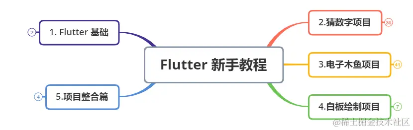
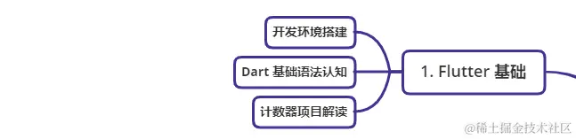
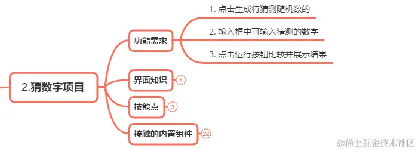
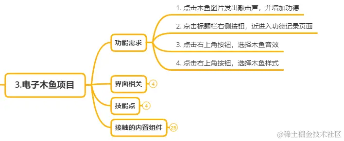
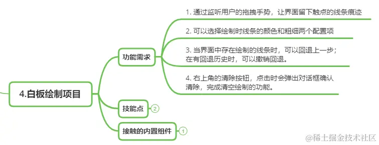
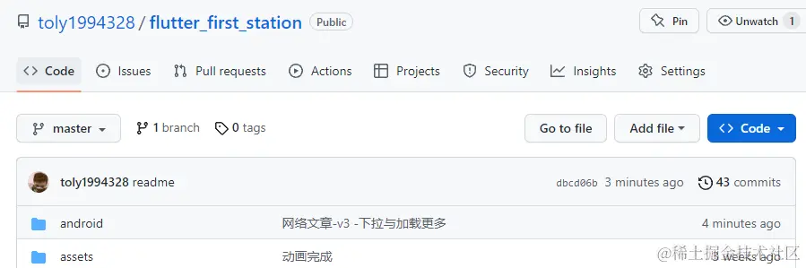
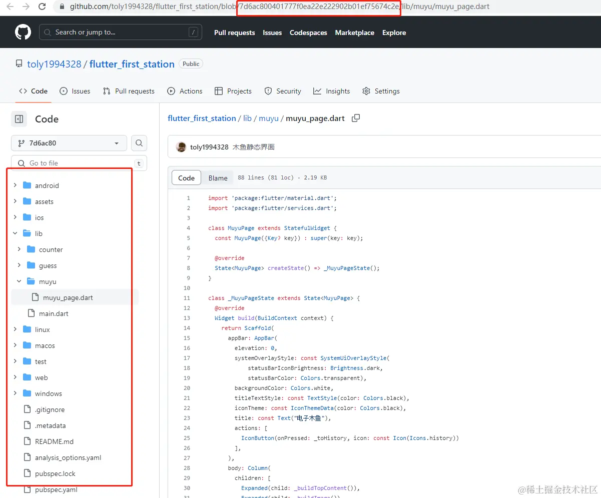

- 01 前言-教程内容导读.md.html
- 02 Flutter 开发环境的搭建.md.html
- 03 新手村基础 Dart 语法 (上).md.html
- 04 新手村基础 Dart 语法 (下).md.html
- 05 Flutter 计数器项目解读.md.html
- 06 猜数字界面交互与需求分析.md.html
- 07 使用组件构建静态界面.md.html
- 08 状态数据与界面更新.md.html
- 09 校验结果与提示信息.md.html
- 10 动画使用与状态周期.md.html
- 11 猜数字整理与总结.md.html
- 12 电子木鱼界面交互与需求分析.md.html
- 13 电子木鱼静态界面构建.md.html
- 14 计数变化与音效播放.md.html
- 15 弹出选项与切换状态.md.html
- 16 用滑动列表展示记录.md.html
- 17 电子木鱼整理与总结.md.html
- 18 白板绘制界面交互与需求分析.md.html
- 19 认识自定义绘制组件.md.html
- 20 通过手势在白板上绘制.md.html
- 21 白板画笔的参数设置.md.html
- 22 撤销功能与画板优化.md.html
- 23 应用界面整合.md.html
- 24 数据的持久化存储.md.html
- 25 网络数据的访问.md.html
- 26 教程总结与展望.md.html
- 捐赠
01 前言-教程内容导读
一、 教程的是什么，不是什么
本系列教程是完全面向 Flutter 新手朋友，即使没有任何编程基础，也可以观看。希望本册以最有趣和通俗的方式，来 迎接 你们走到 Flutter 新手村的第一站。就像不可能在小学一年级就教学生微积分，所以本册：
[1]. 不会 涉及复杂的算法和数据结构 [2]. 不会 涉及系统全面的 Dart 语法介绍 [3]. 不会 涉及项目组织、代码管理的思想 [4]. 不会 涉及框架原理、源码的原理剖析 [5]. 不会 涉及跨平台适配、插件编写知识 [6]. 不会 涉及应用性能分析和优化
不过这些知识点在你的编程之路上，总会在某处等待着你。对知识而言，每个阶段有不同的渴求，很多知识需要门槛和经验积累才能领悟，需要时间来沉淀，所以并不用急于求成。入门的第一站，别给自己太大的压力，玩好就行了，如果能有些自己的体悟，那就是锦上添花了。
本教程只是一个起点，我会尽可能通过有趣的例子，让你在最初的路途中不对编程产生不适。如果能燃起你的一丝兴趣，将是本教程的荣光。学完本课程，你将会：
[1]. 初步认知 Flutter 框架是什么，能干什么。 [2]. 初步了解 最基础的 Dart 语法知识。 [3]. 学会 通过常用组件构建出简单的界面。 [4]. 学会 在 Flutter 项目中使用别人的依赖库。 [5]. 初步掌握 Flutter 中数据的持久化手段。 [6]. 学会 通过界面交互完成一些简单的功能逻辑。
二、 教程的五大模块
本教程共 26 章，分为如下 5 大模块：

1.Flutter 基础
第一个模块是 Flutter 最基础的前置知识准备阶段，包括环境搭建、Dart 基础语法介绍、计数器项目解读个三部分。如果已经开发过 Flutter 项目的朋友，可以选择跳过本模块，也可以温故知新。

2. 猜数字模块
第二个模块是猜数字项目，这是我设计的一个比较简单有趣的小案例，生成随机数后，在头部输入框猜数字。其中包含着 Flutter 最基础的知识点，比如基础组件的使用、界面的布局、逻辑的控制、动画的使用等。麻雀虽小五脏俱全，非常适合新手学习。
| 生成随机数 | 输入比较 |
|---|---|

3.电子木鱼模块
第三个模块是电子木鱼项目，也是一个比较简单有趣的小案例，最主要的功能是点击图片发出木鱼的音效。另外支持功德记录的查看，以及音效、图片的选择。其中包含也着 Flutter 很多的知识点，比如基础组件的使用、状态类生命周期回调、依赖库的使用、本地资源配置等。
| 点击木鱼 | 查看功德记录 |
|---|---|

4.白板绘制模块
第四个模块是白板绘制项目，用户可以通过手势交互在界面上绘制线条，交互性很强，也非常有趣；支持线颜色和线宽的选择，并可以回退上一步和撤销回退。其中包含也着 Flutter 很多的知识点，比如绘制的使用、手势监听器的使用、组件封装等。
| 画板绘制 | 回退和撤销 |
|---|---|

5.项目整合
最后一部分将介绍如何将之前的一个个孤零零的界面，通过导航结构整合为一个项目。并了解如何在切换界面时，保活状态数据。这部分还会介绍数据的持久化存储，这样用户的选择项和一些记录数据就可以存储到本地，不会随着应用的退出而重置。最后，会介绍对网络数据的访问，完成下面文章展示页的小案例：
| 下拉刷新 | 加载更多 |
|---|---|
三、关于本教程的源码
项目源码在 github 上托管，项目名是 : flutter_first_station ，寓意是 Flutter 的第一站。

另外，源码是最终版效果，中间一步步的实现过程通过提交节点来查看，在文章相关位置会有对应节点的连接地址，访问即可看到当前步骤下的源码。
比如上面是 13 章介绍电子木鱼静态界面构建的章节，点击就会进入当前节点所处的源码位置：

那废话不多说，一起开始本教程的旅程吧 ~
© 2019 - 2023 Liangliang Lee. Powered by gin and hexo-theme-book.